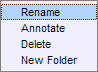
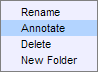
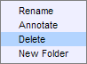
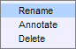
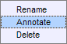
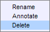
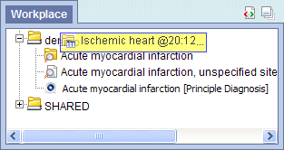
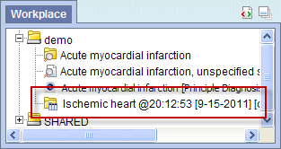
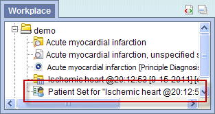

i2b2 Workplace View
Information in the Workplace view is related to the most common concepts and queries that an individual uses an in essence becomes their personal workspace. The main objectives of this view are:
- Save and organize user specific items.
- Share information with other project users.
- Project managers can view the workplace for individual team members.
The items stored in the Workplace view can be used in many of the i2b2 views and plug-ins, such as the Query Tool view plug-in.
Introduction
This section describes the layout and contents of this view.
Layout of the Workplace View
Information in the Workplace view is related to the most common concepts and queries that an individual uses and in essence becomes their personal workplace.

The Workplace view is hierarchical display of the items added by the user. There are three main branches or components of the tree that displays.
User Folder
The highest level is the individual user folder ( ). This folder is automatically created with the user's name and it stores items added by the individual user. This level cannot be used when creating a query.
). This folder is automatically created with the user's name and it stores items added by the individual user. This level cannot be used when creating a query.
 This also includes the Shred folder.
This also includes the Shred folder.
Folders
A folder ( ) in the workplace view contains other folders and / or items added by the user. It can be expanded and collapsed by clicking on the plus sign (
) in the workplace view contains other folders and / or items added by the user. It can be expanded and collapsed by clicking on the plus sign ( ) or negative sign (
) or negative sign ( ) next to it. A user defined folder can not be dragged to other i2b2 views. It can be moved around within the Workplace view.
) next to it. A user defined folder can not be dragged to other i2b2 views. It can be moved around within the Workplace view.
Items
Items are the lowest level of the hierarchy. They can not be expanded further. Some examples of items are listed below.
- Concepts (
 )
)
- Group of concepts (ontology folder) ()
- Patient set (
 )
)
Navigation
Expand / Collapse a Folder
Users can expand or collapse a folder by clicking on the plus sign () or negative sign () next to the folder icon.
Expand (Open) a Folder
- Click on the plus sign () next to the folder in the Workplace view.
- The folder will open and all the items in the folder will display.
Collapse (Close) a Folder
- Click on the negative sign () next to the folder in the Workplace view.
- The folder will open and all the items in the folder will display.
Add a Workplace Folder
- Using the right mouse button down, click on your user folder in the Workplace view.
- A menu will open saying New Folder.
- Click on New Folder.
- A new window will open.
- In the text box enter the name you want to be displayed.
- Click on the OK button.
- The new folder will appear in the Workplace view.
Rename a Folder
Users can easily rename an existing folder.
- Using the right mouse button down, click on the folder you want to rename.
- A menu will open with several options.

- Select Rename from the list.
- A new window will open.
- In the text box change the current name to the new name.
- Click on the OK button.
- The folder will appear in the Workplace view with the new name.
Annotate a Folder
Users can change the default annotation for any of their folders in the Workplace view.
The annotation is what is displayed in the tool tip.
- Using the right mouse button down, click on the folder you want to annotate.
- A menu will open with several options.

- Select Annotate from the list.
- A new window will open.
- In the text box enter the text you want to appear when the tooltip is displayed.
- Click on the OK button.
- Using the mouse, hover over the folder you just annotated.
- The text you entered will display as a tool tip.
Delete a Folder
Users can remove a folder from the Workplace view.
 All items in the folder will be deleted when the folder is removed. It is recommended that you move items that you want to keep to another folder.
All items in the folder will be deleted when the folder is removed. It is recommended that you move items that you want to keep to another folder.
- Using the right mouse button down, click on the folder you want to delete.
- A menu will open with several options.

- Select Delete from the list.
- A message box will open.
- Click on the OK button.
- The folder and all of its contents will no longer appear in the Workplace view.
Rename Items
Users can easily rename an item in the Workplace view.
- Using the right mouse button down, click on the item you want to rename.
- A menu will open with several options.

- Select Rename from the list.
- A new window will open.
- In the text box change the current name to the new name.
- Click on the OK button.
- The folder will appear in the Workplace view with the new name.
Annotate Items
Users can change the default annotation for any of the items in their folder in Workplace view.
The annotation is what is displayed in the tool tip.
- Using the right mouse button down, click on the item you want to annotate.
- A menu will open with several options.

- Select Annotate from the list.
- A new window will open.
- In the text box enter the text you want to appear when the tooltip is displayed.
- Click on the OK button.
- Using the mouse, hover over the folder you just annotated.
- The text you entered will display as a tool tip.
Delete Items
Users can remove items from the Workplace view.
- Using the right mouse button down, click on the item you want to delete.
- A menu will open with several options.

- Select Delete from the list.
- A message box will open.
- Click on the OK button.
- The item will no longer appear in the Workplace view.
Adding Items to Workplace View
This section describes how to add items to the Workplace view.
Items Draggable to Workplace
Items can be dragged and dropped (copied) into the Workplace view from other views in the i2b2 Web Client.
- Folder
A folder () and all its concepts (children) can be added to Workplace by dragging the folder name from one of the following views.
- Find Terms view
- Navigate Terms view
- Concept
A concept () can be added to Workplace by dragging the name of the concept from one of the following views.
- Find Terms view.
- Navigate Terms view
- Patient Set
A list of patients () can be added to Workplace by dragging the name of the patient set from the following view.
- Previous Query
A previous query () can be added to Workplace by dragging the name of the previous query from the following view.
Add Folders
Add Folder From Find Terms View
- Highlight the folder () by clicking on the name of the folder.
- While holding the left mouse button down, drag the folder over to the Workplace view.
- Drop the folder into either your workplace folder or the shared folder.
- The folder will now display in the Workplace view with the same name.

Add Folder From Navigate Terms View
- Highlight the folder () by clicking on the name of the folder.
- While holding the left mouse button down, drag the folder over to the Workplace view.
- Drop the folder into either your workplace folder or the shared folder.
- The folder will now display in the Workplace view with the same name.
Add Concepts
Add Concepts From Find Terms View
- Highlight the concept () by clicking on the name of the concept.
- While holding the left mouse button down, drag the folder over to the Workplace view.
- Drop the concept into either your workplace folder or the shared folder.

- The concept will now display in the Workplace view with the same name.

Add Concepts From Navigate Terms View
- Highlight the concept () by clicking on the name of the concept.
- While holding the left mouse button down, drag the folder over to the Workplace view.
- Drop the concept into either your workplace folder or the shared folder.
- The concept will now display in the Workplace view with the same name.
Add Previous Query
Add Previous Query From Previous Query View
- Highlight the previous query () by clicking on the name of the query.
- While holding the left mouse button down, drag the previous query name to the Workplace view.
- Drop the previous query into either your workplace folder or the shared folder.

- The previous query will now appear in the workplace with the same name.

Add Patient Set
Add Patient Set From Previous Query View
- Click on the plus sign () next to the name of the previous query that contains the patient set.
- Click on the plus sign () next to the results folder.
- Highlight the Patient Set () by clicking on its name.
- While holding the left mouse button down, drag the Patient Set to the Workplace view.
- Drop the patient set into either your workplace folder or the shared folder.

- The patient set will now appear in the workplace.

Using Items in Workplace View
This section describes how to use items in the Workplace view.
Items Draggable from Workplace
Items can be dragged and dropped (copied) from the Workplace view to other views in the i2b2 Web client.
- Folder
A folder () and all its concepts (children) can be added to other views by dragging the folder name from Workplace to one of the following views.
- Query Tool view; drop in the panel.
- Concept
A concept () can be added to other views by dragging the name of the concept from Workplace to one of the following views.
- Query Tool view; drop in the panel.
- Previous Query
A previous query () can be added to other views by dragging the previous query name from Workplace to one of the following views.
- Query Tool view; drop in the panel.
Using Concepts and Folders
A folder or individual concept can be added to the query tool view by simply dragging the item from Workplace view and dropping it into one of the panels in the Query Tool view.
Add Folder to Query Tool View
- Highlight the folder () by clicking on the name of the folder.
- While holding the left mouse button down, drag the folder over to the Query Tool view.
- Drop the folder into the panel labeled Group 1.

- The folder will now display in the panel for Group 1.
Add Concept to Query Tool View
- Highlight the concept () by clicking on the name of the folder.
- While holding the left mouse button down, drag the concept over to the Query Tool view.
- Drop the folder into the panel labeled Group 1.

- The concept will now display in the panel for Group 1.
Using Previous Query
A previous query can be added to other i2b2 views by simply dragging the previous query name from the Workplace view to one of the following views.
Add Previous Query to Query Tool View
- Highlight the previous query () by clicking on the name of the query.
- While holding the left mouse button down, drag the previous query name to the Query Tool view.
- Drop the previous query into the Query Name field.

- The concept(s) associated with the previous query will display in the appropriate group(s) and the name of the query will appear at Query Name.

Using Patient Set
A list of patients can be added to other i2b2 views by simply dragging the name of the patient set from the Workplace view to one of the following views.